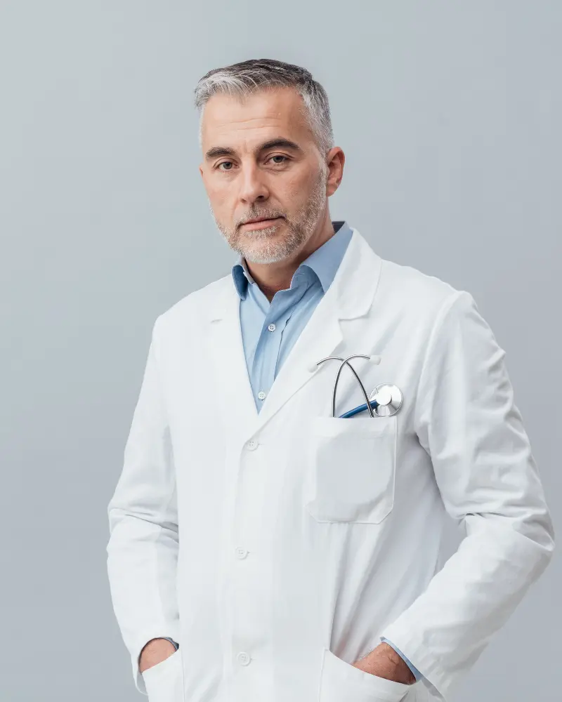

Our Doctors
Our hospital is home to skilled and compassionate doctors from diverse specialties, committed to providing personalized, top-quality care. Whether for routine check-ups or advanced treatment, our team ensures your health and well-being come first.
Dr. Sarah Thompson
Specialization: Cardiology
Experience: 10 years

Dr. James Carter
Specialization: Orthopedics
Experience: 18 years
Dr. Emily Gracia
Specialization: Neurology
Experience: 23 years
Dr. Mark Patel
Specialization: Radiology
Experience: 14 years
Dr. Sophia Martinez
Specialization: Oncology
Experience: 17 years
Dr. Robert Neil
Specialization: Dermetalogy
Experience: 20 years
Dr. Farhan Abdul Azeez
Specialization: Emergency Medicine
Experience: 25 years
Dr. Jane Smith
Specialization: Pediatrics
Experience: 15 years
Dr. Elizabeth Laur
Specializaton: General Physician
Experience: 14 years
Dr. Ethan Williams
Specialization: Physchiatry
Experience: 26 years